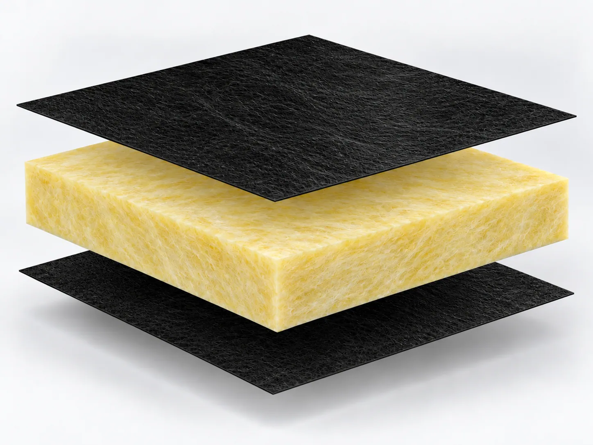
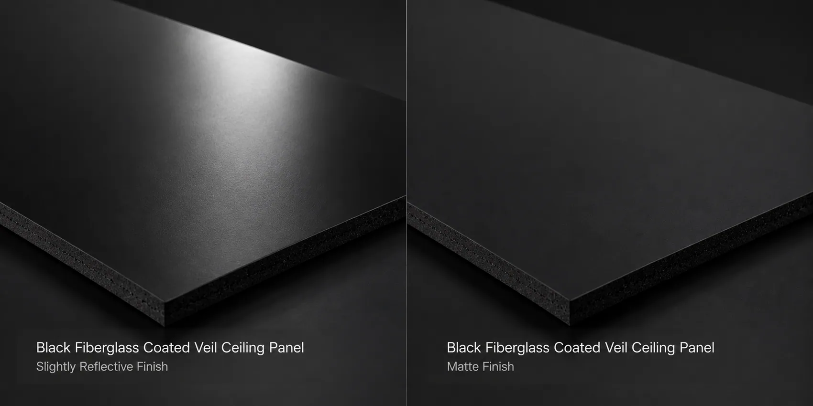
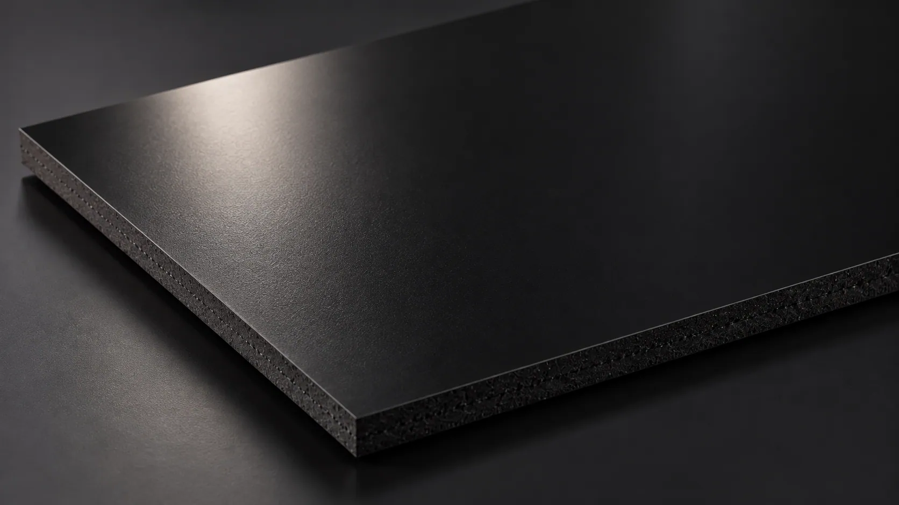
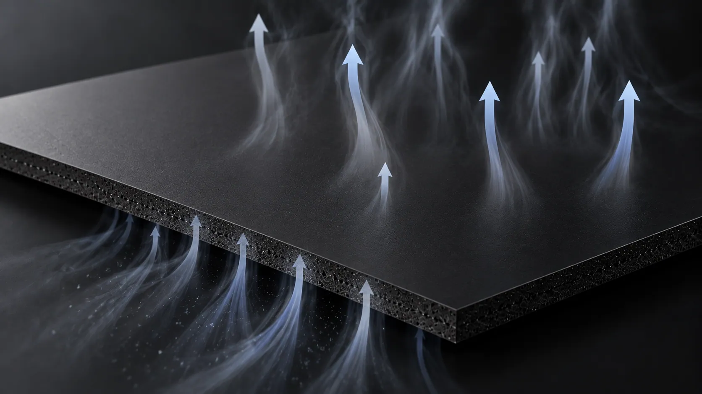
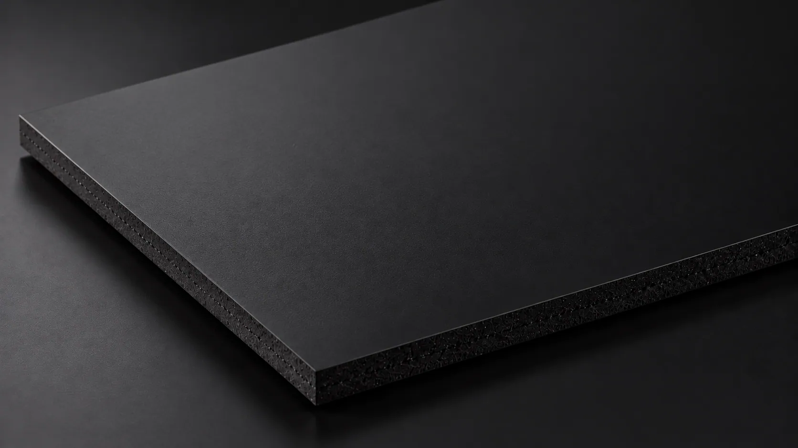
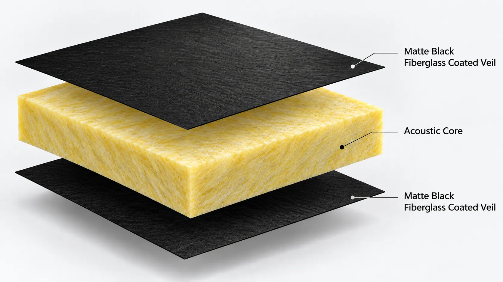
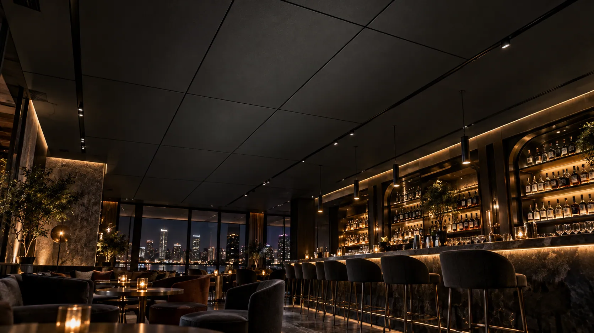
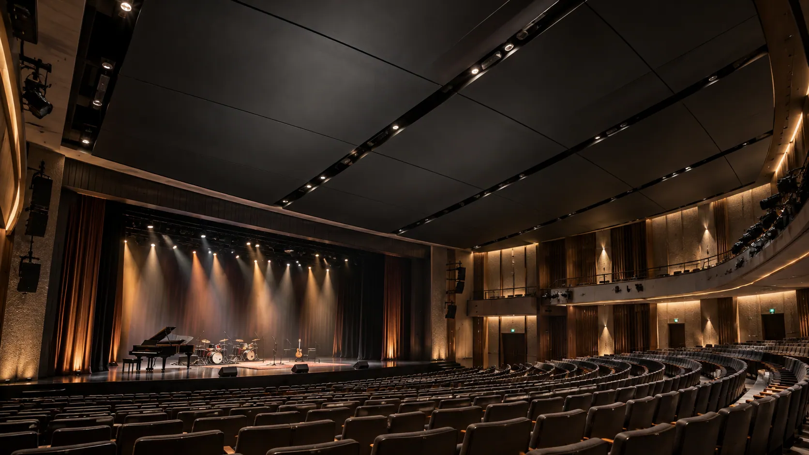

Black tone
Color variation between adjoining panels can interrupt a uniform ceiling or wall appearance.
BLACK ACOUSTIC FACING SOLUTIONS
Deep Black. Minimal Reflection. Designed for Immersive Spaces.
A matte black fiberglass facing for acoustic ceilings and walls in dark interiors. Review the finish under intended lighting, then select coverage and permeability for your panel.

DESIGNED FOR DARK INTERIORS
Spotlights, stage lighting and projection can reveal small differences in dark ceiling and wall surfaces.
Color variation between adjoining panels can interrupt a uniform ceiling or wall appearance.
Unwanted reflections may become visible under directional lighting or in projection environments.
A fine, uniform texture helps neighboring panels present a coordinated surface.
Select permeability around the core material and the finished panel's sound absorption requirements.

ENGINEERED FOR VISUAL CONSISTENCY
The coating controls the visible finish while the fiberglass substrate supports panel production. Review both alongside the intended acoustic response.
Controlled coating helps reduce unwanted visibility of the underlying substrate or core.
The veil structure and coating treatment provide a low-glare surface with a consistent texture.
Evaluate available permeability grades for your core and sound absorption targets.
A dimensionally stable substrate supports handling, cutting, lamination and conversion.
SEE THE DIFFERENCE
Review samples under identical lighting to judge reflection and texture. Surface appearance and acoustic characteristics need separate consideration.

Conventional surfaces may show texture variation or unwanted reflections under directional lighting.

Selectable airflow levels provide a material direction for different acoustic panel requirements.

A refined matte finish with uniform black coverage for visually demanding dark interiors.
HOW IT WORKS
The coated veil is a lightweight facing layer; the acoustic core supplies the primary sound-absorbing structure.

A stable veil with uniform matte coating provides the black surface, fine texture and selectable permeability.
The core provides the main sound-absorbing structure of the finished ceiling or wall panel.
The facing material and acoustic core should be evaluated as a complete system to achieve the desired balance between visual appearance and acoustic performance.
FIND YOUR FACING SOLUTION
Select the black facing grade around the underlying core and the desired surface and acoustic characteristics.
A consistent black finish with suitable airflow for general acoustic ceiling and wall panels.
Stronger concealment of the core for cinemas, theaters and dark interiors with higher coverage requirements.
An airflow-sensitive direction for sound-absorbing systems where facing resistance is an important acoustic variable.
TECHNICAL INFORMATION
Confirm the available grade and customization options against the intended panel and lighting conditions.
| Parameter | Specification |
|---|---|
| Product | Matte Black Fiberglass Coated Veil |
| Base Material | Fiberglass Veil |
| Surface Treatment | Matte Black Coating |
| Color | Black |
| Surface Finish | Fine, Matte Texture |
| Surface Appearance | Low-Glare |
| Weight | Grade-Dependent / Customizable |
| Roll Width | Customizable |
| Air Permeability | Selectable by Grade |
| Surface Coverage | Standard / High-Hiding |
| Compatible Core | Mineral Wool / Glass Wool |
| Supply Form | Rolls |
| Customization | Width, Weight, Coating, Air Permeability & Surface Properties |
Technical specifications, tolerances, and test results vary by product grade. Low-glare appearance should be verified under the intended lighting conditions. Contact GRECHO for detailed specifications and available customization options.
APPLICATIONS
Choose the facing with the complete panel's acoustic and visual requirements in view.
Matte black ceilings and walls help reduce distracting surface reflections in projection environments when paired with suitable acoustic cores.

A uniform matte finish complements low-light interiors and decorative lighting while allowing selection of an appropriate acoustic construction.

A discreet dark surface under stage lighting, with airflow characteristics chosen for the intended panel system.
FROM SAMPLE TO PRODUCTION
Compare appearance and process compatibility before committing to full production.
Share the core, dimensions, black-surface expectations and acoustic targets.
Check black uniformity, matte appearance, coverage and permeability under representative lighting.
Test the facing with your core, lamination process and finished panel construction.
Agree the grade, roll dimensions, technical properties and supply requirements.
FAQ
A matte finish is designed to reduce the appearance of specular reflections compared with glossier surfaces. Actual behavior depends on the formulation, texture, lighting and viewing angle.
Both can be evaluated. Final suitability depends on the core, lamination process and performance requirements.
Roll width, basis weight, coating, coverage and permeability may be considered, subject to the chosen grade and manufacturing feasibility.
LET'S FIND YOUR SOLUTION
Share your core, intended lighting and surface requirements to discuss a facing grade and sample evaluation.